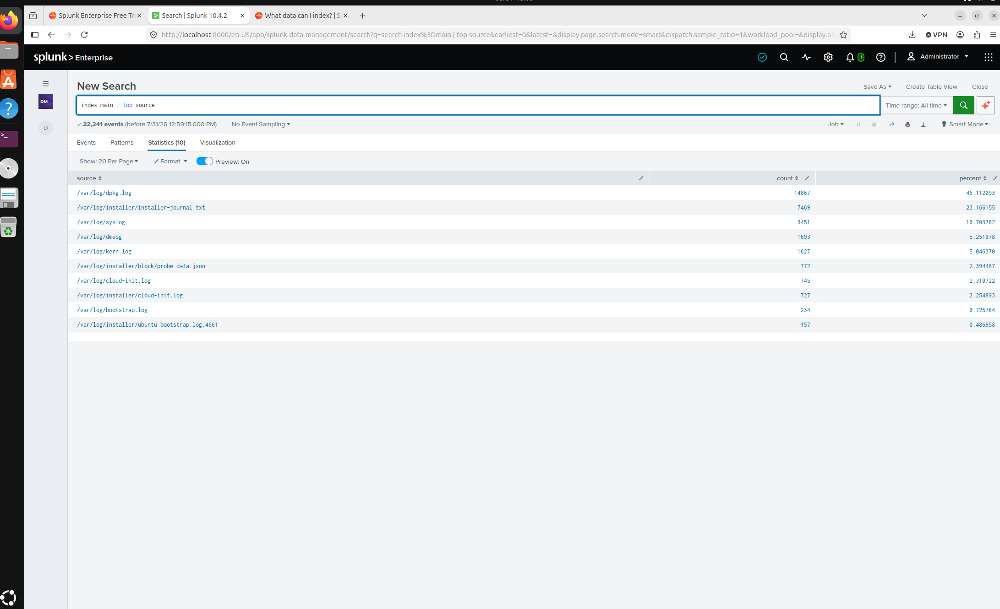
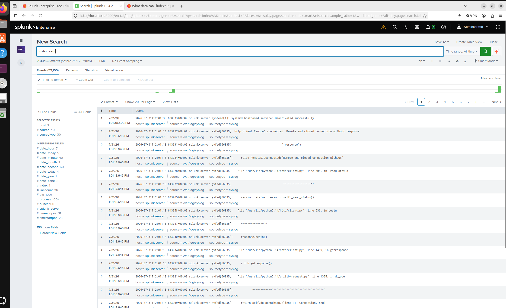
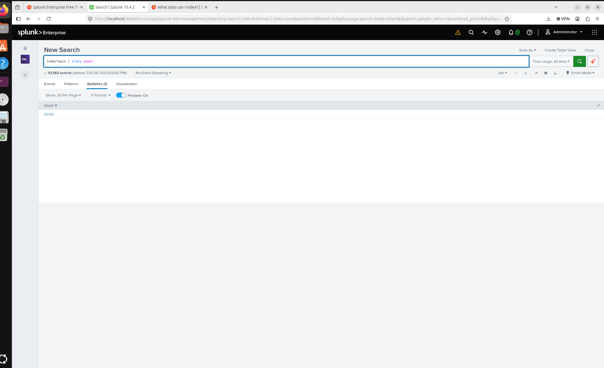
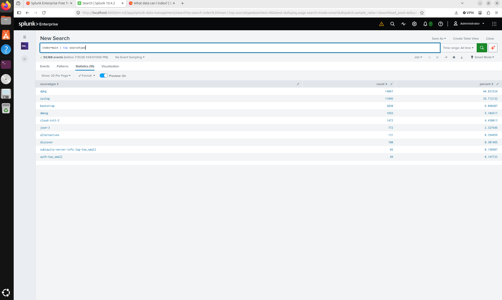
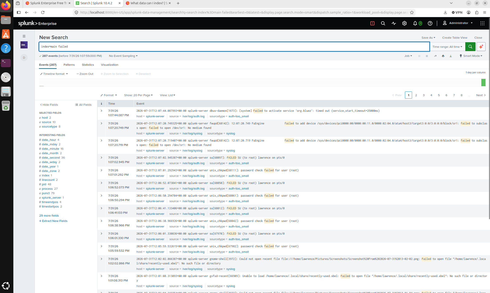
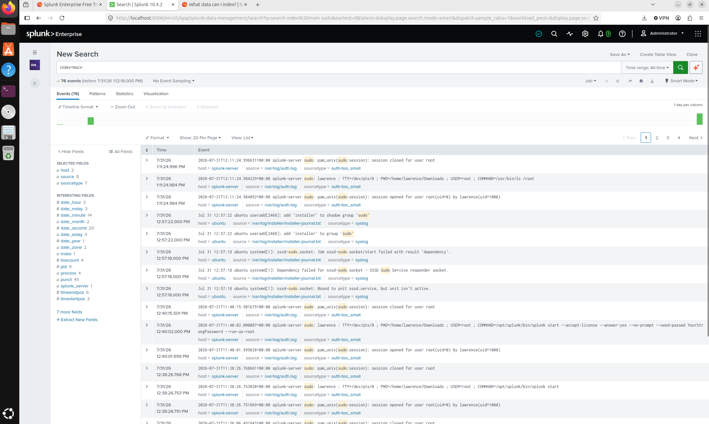

This project demonstrates the deployment of Splunk Enterprise 10.4.2 in a home lab to collect, index and investigate Linux security logs using Splunk Processing Language (SPL).
Security Information and Event Management (SIEM) platforms are a core technology used by Security Operations Centres (SOCs). In this project I built a Splunk Enterprise home lab to gain practical experience collecting, indexing and investigating Linux security logs.
I created this lab to gain practical SIEM experience beyond certification study. The project demonstrates log collection, event searching and security investigations using real Linux system logs.
After installing Splunk Enterprise, I configured the administrator account and added the /var/log directory using continuous monitoring. Splunk successfully indexed more than 33,000 Linux events for investigation and analysis.
index=main
index=main | stats count
index=main | top source
index=main | top user
index=main | top host
index=main | top sourcetype
index=main failed
index=main accepted
index=main sudo





Building this lab strengthened my understanding of SIEM deployment, Linux log analysis, authentication monitoring and security investigations using Splunk Enterprise.